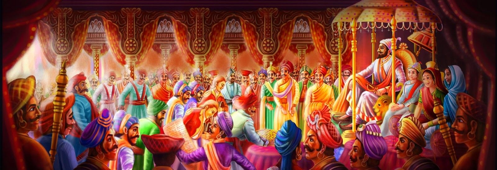

<div class="container-fluid">
  <div class="row">
    <div class="card">
      <div class="row" data-aos="zoom-in-up" data-aos-duration="3000">
        <div class="col-12">
            <p class="head">राज्याभिषेक -</p>
            
        </div>
        <div class="col-12">

          <p class="text">
            छत्रपती शिवाजी महाराजांनी ज्येष्ठ शुद्ध त्रयोदशी शालिवाहन शके १५९६
            म्हणजेच ६ जून १६७४ ला स्वतःस राज्याभिषेक करून घेतला आणि एका सार्वभौम
            राज्याच्या जयघोष केला. कित्येक वर्षे गुलामीत राहिलेल्या मराठी
            मुलुखात नवचैतन्याचा सोहळा पार पडला.छत्रपती शिवाजी महाराजांचा
            राज्याभिषेक हा अत्यंत व्यापक आणि भारताच्या इतिहासातील एक अत्यंत
            महत्वाचा प्रसंग होता. राज्याभिषेकावेळी छत्रपती शिवाजी महाराजांनी
            छत्रपती हे पद धारण केले. छत्रपती म्हणजे सार्वभौम आणि सर्वेसर्वा.
            राज्याच्या कारभारासाठी अष्टप्रधान मंडळाची निर्मिती केली आणि राज्याचा
            कारभार आणि पदे वाटून देण्यात आली. छत्रपती शिवाजी महाराजांच्या
            राज्याभिषेकावेळी महाराणी म्हणून सोयराबाई आणि युवराज म्हणून छत्रपती
            संभाजीराजे महाराजांचा ही अभिषेक करण्यात आला. छत्रपती शिवाजीराजे
            भोसले यांच्या शिवराज्याभिषेकाची तयारी कितीतरी महिने आधी सुरू झाली
            होती. राज्यभिषेकासाठी निश्चित अशी कोणती परंपरा नव्हती. प्राचीन
            परंपरा आणि राजनीतीवरील ग्रंथातून काही विद्वानांनी प्रथा-परंपरांचा
            अभ्यास केला. शिवराज्यभिषेकासाठी देशातील कानाकोपऱ्यांतून ब्राह्मणांना
            आमंत्रण देण्यात आले होते. लोक मिळून जवळपास लाखभर लोक रायगड या ठिकाणी
            जमा झाले होते. चार महिन्यांसाठी त्यांची राहण्याची उत्तम व्यवस्था
            करण्यात आली होती. रोज त्यांना मिष्ठान्नाचे जेवण असे. सरदार राज्यातील
            श्रीमंत गणमान्य व्यक्ती, दुसऱ्या राज्यांचे प्रतिनिधी, विदेशी
            व्यापारी आणि सामान्य जनता असे सर्वच या सोहळ्याला उपस्थित झाले होते.
            प्रत्येक दिवशी एका धार्मिक विधीत आणि संस्कारात छत्रपती शिवाजी महाराज
            गढून गेले होते.छत्रपती शिवाजी महाराजांनी सर्वप्रथम आपली आई
            जिजाबाईंना नमस्कार केला. त्यांचे आशीर्वाद घेतले. त्यानंतर महाराजांनी
            विविध मंदिरांत जाऊन देवदर्शन केले. देवके दर्शन घेतले, पूजा केली आणि
            ते रायगडाला १२ मे १६७४ला परत आले. तुळजापूरला भवानी मातेच्या
            दर्शनासाठी त्यांना जाणे शक्य नव्हते. म्हणून चार दिवसांनी ते
            प्रतापगडवरील प्रतिष्ठापना केलेल्या भवानीमाता देवीच्या दर्शनासाठी
            गेले. त्यावेळी सव्वा मण सोन्याची छत्री भवानी मातेस अर्पण केली. २१
            मेला पुन्हा रागयगडावर ते धार्मिक विधीत गुंतून गेले. महाराजांनी
            २८मेला प्रायश्चित्त केले. जानवे परिधान केले. दुसऱ्या दिवशी दोन
            राण्यांबरोबर पुन्हा विवाह विधी केला. त्यावेळी गागाभट्टांना ७००० होन
            तर इतर सर्व ब्राह्मणांना मिळून १७००० होन दक्षिणा दिली. दुसऱ्या दिवशी
            महाराजांची सोने, चांदी, तांबे, जस्त, कथील, शिसे आणि लोखंड अशा सात
            धातूंनी वेगवेगळी तुला झाली. याशिवाय वस्त्र, कापूर, मीठ, खिळे, मसाले,
            लोणी, गुळ, फळे इत्यादींच्या तुला झाल्या. ६ जून १६७४ला राज्याभिषेक
            झाला. या दिवशी पहाटे उठून, मंत्रोच्चार आणि संस्काराबरोबर आंघोळ करून,
            कुलदैवतेला स्मरून, राज्याभिषेक सुरू झाला. गागाभट्ट आणि इतर
            ब्राह्मणांना यावेळीही आभूषणे आणि वस्त्रे भेट देण्यात आली. यावेळी
            छत्रपती शिवाजीमहाराजांनी शुभ्र वस्त्र परिधान केले होते. गळ्यात
            फुलांच्या माळा घातलेल्या होत्या. राज्याभिषेकात राजाचा अभिषेक आणि
            डोक्यावर छत्र धरणे हे दोन प्रमुख विधी होते. दोन फूट लांब दोन फूट
            रुंद अशा सोन्याने मढवलेल्या मंचावरछत्रपती शिवाजी महाराज बसले, शेजारी
            उपरण्याला साडीचे टोक बांधलेली सोयराबाई दुसऱ्या मंचावर, तर
            बालसंभाजीराजे थोडेसे मागे बसले होते. अष्टप्रधानांतील आठ प्रधान
            गंगेसारख्या विविध नद्यांतून आणलेले पाण्याचे जलकुंभ घेऊन उभे होते.
            त्यानंतर ते जलकुंभांनी छत्रपती शिवाजीमहाराजांबर अभिषेक केला.
            त्यावेळी मंत्रोच्चारण आणि आसमंतात विविध सुरवाद्य निनादत होते. सोळा
            सुवासिनींनी पंचारती ओवाळली. यानंतर छत्रपती शिवाजी महाराजांनी
            लालरंगाचे वस्त्र परिधान केले. जडजवाहिर, अलंकार परिधान केले.गळ्यात
            फुलांचे हार घातले. एक राज मुकुट घातला. आपल्या ढाल तलवार आणि
            धनुष्यबाणाची पूजा केली.मुहूर्ताच्या वेळी राजसिंहासनाच्या दालनात
            प्रवेश केला. राज्यभिषेकाचे दालन हिंदू परंपरेनुसार ३२ शकुन चिन्हांनी
            सजवलेले होते. सभासदबखर म्हणते त्याप्रमाणे ३२ मण सोन्याचे (१४ लाख
            रुपये मूल्य असलेले) भव्य सिंहासन सोन्याच्या पत्र्याने मढवलेले
            होते.छत्रपती शिवाजी महाराज सिंहासनावर आरुढ झाले. सोळा सवाष्णींनी
            त्यांना ओवाळले. ब्राह्मणांनी मोठ्या स्वरात मंत्रांचे उच्चारण केले.
            प्रजेनी महाराजांना आशीर्वाद दिला. ’शिवराज की जय’, 'शिवराज की जय’च्या
            घोषणा दिल्या गेल्या. सोन्याचांदीची फुले उधळली गेली. विविध
            तालवाद्य-सूरवाद्यांच्या जयघोषात आसमंत भरून गेले. ठरल्याप्रमाणे
            प्रत्येक गडावरून तोफा डागल्या गेल्या. मुख्य पुरोहित गागाभट्टांनी
            पुढे येऊन राजांच्या डोक्यावर मोत्याची झालर ठेवत 'शिवछत्रपती’ म्हणून
            उच्चार केला. राजे छत्रपती शिवाजी महाराजांनी सर्व जनांना खूप धन भेट
            म्हणून दिले. त्यांनी एकून सोळा प्रकारचे महादान केले. त्यानंतर विविध
            मंत्रिगणांनी सिंहासनापुढे जाऊन राजांना अभिवादन केले. छत्रपतींनी
            त्यांना या प्रसंगी विविध पदे, नियुक्तिपत्रे, धन, घोडे,
            हत्ती,रत्ने,वस्त्रे,शस्त्रे दान केली. हे सर्व सकाळी आठ वाजेपर्यंत
            संपले. समारंभ संपल्यावर,छत्रपती शिवाजी महाराज पहिल्यांदा एका देखण्या
            घोड्यावर स्वार होऊन जगदीश्वराच्या मंदिराकडे गेले. तिकडून हत्तीवर
            स्वार होऊन त्यांची मिरवणूक रायगडावर निघाली. इतर दोन हत्तींवर जरीपटका
            आणि भगवा झेंडे घेऊन सैन्याचे प्रतिनिधी होते. सोबत अष्टप्रधान आणि इतर
            सैन्य होते. रायगडावर ही मिरवणूक जात असताना सामान्य जनांनी फुले,
            चुरमुर, उधळले, दिवे ओवाळले. रायगडावरील विविध मंदिरांचे दर्शन घेऊन
            महाराज महालात परतले.
          </p>
        </div>
      </div>
    </div>
  </div>
</div>
